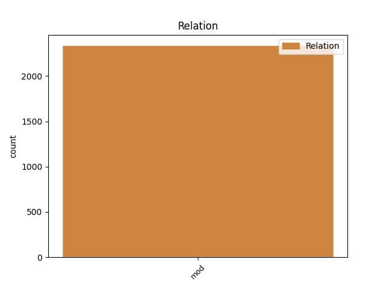
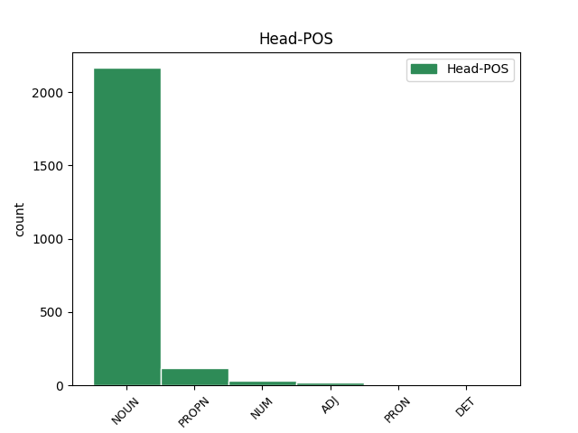
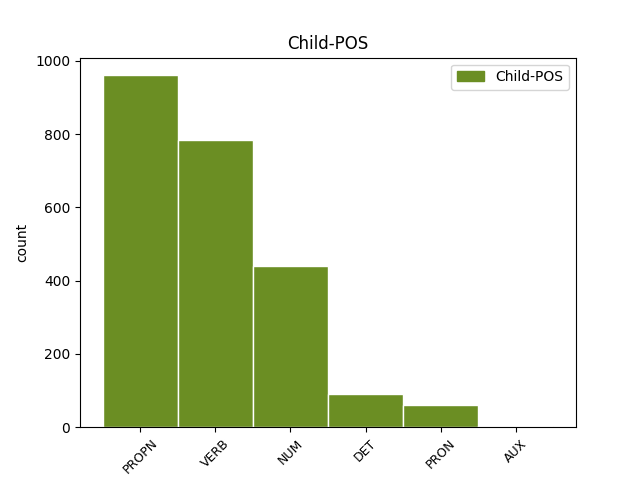

Distribution of features within this leaf



Agreement Rules sorted by frequency.
- When the dependent token is the modifer(mod) of the head token, and the dependent token is VERB.
1 Он _ _ _ _ 0 _ _ _
2 часто _ _ _ _ 0 _ _ _
3 заявляет _ _ _ _ 0 _ _ _
4 про _ _ _ _ 0 _ _ _
5 заговоры _ _ _ _ 0 _ _ _
6 феминисток _ _ _ _ 0 _ _ _
7 , _ _ _ _ 0 _ _ _
8 утверждая _ _ _ _ 0 _ _ _
9 , _ _ _ _ 0 _ _ _
10 что _ _ _ _ 0 _ _ _
11 последние _ _ _ _ 0 _ _ _
12 -- _ _ _ _ 0 _ _ _
13 воплощение воплощение NOUN NN Animacy=Inan|Case=Nom|Gender=Neut|Number=Sing 0 _ _ _
14 зла _ _ _ _ 0 _ _ _
15 , _ _ _ _ 0 _ _ _
16 стремящееся стремиться VERB VBNL Animacy=Inan|Aspect=Imp|Case=Nom|Gender=Neut|Number=Sing|Tense=Pres|VerbForm=Part|Voice=Act 13 mod _ _
17 править _ _ _ _ 0 _ _ _
18 миром _ _ _ _ 0 _ _ _
19 ( _ _ _ _ 0 _ _ _
20 впоследствии _ _ _ _ 0 _ _ _
21 выясняется _ _ _ _ 0 _ _ _
22 , _ _ _ _ 0 _ _ _
23 что _ _ _ _ 0 _ _ _
24 этим _ _ _ _ 0 _ _ _
25 он _ _ _ _ 0 _ _ _
26 объясняет _ _ _ _ 0 _ _ _
27 свою _ _ _ _ 0 _ _ _
28 усталость _ _ _ _ 0 _ _ _
29 после _ _ _ _ 0 _ _ _
30 близости _ _ _ _ 0 _ _ _
31 со _ _ _ _ 0 _ _ _
32 своей _ _ _ _ 0 _ _ _
33 бывшей _ _ _ _ 0 _ _ _
34 девушкой _ _ _ _ 0 _ _ _
35 за _ _ _ _ 0 _ _ _
36 год _ _ _ _ 0 _ _ _
37 до _ _ _ _ 0 _ _ _
38 основного _ _ _ _ 0 _ _ _
39 сюжета _ _ _ _ 0 _ _ _
40 ) _ _ _ _ 0 _ _ _
41 , _ _ _ _ 0 _ _ _
42 и _ _ _ _ 0 _ _ _
43 прочие _ _ _ _ 0 _ _ _
44 бессмысленности _ _ _ _ 0 _ _ _
45 , _ _ _ _ 0 _ _ _
46 возможно _ _ _ _ 0 _ _ _
47 , _ _ _ _ 0 _ _ _
48 соревнуясь _ _ _ _ 0 _ _ _
49 с _ _ _ _ 0 _ _ _
50 Рин _ _ _ _ 0 _ _ _
51 в _ _ _ _ 0 _ _ _
52 `` _ _ _ _ 0 _ _ _
53 исключительности _ _ _ _ 0 _ _ _
54 '' _ _ _ _ 0 _ _ _
55 . _ _ _ _ 0 _ _ _
1 Цветки _ _ _ _ 0 _ _ _
2 с _ _ _ _ 0 _ _ _
3 тонким _ _ _ _ 0 _ _ _
4 дневным _ _ _ _ 0 _ _ _
5 ароматом _ _ _ _ 0 _ _ _
6 , _ _ _ _ 0 _ _ _
7 около _ _ _ _ 0 _ _ _
8 3,1 3,1 NUM CD Animacy=Inan|Case=Gen|Gender=Masc|Number=Sing|NumType=Card 9 mod _ _
9 см см NOUN NN Animacy=Inan|Case=Gen|Gender=Masc|Number=Sing 0 _ _ _
10 в _ _ _ _ 0 _ _ _
11 диаметре _ _ _ _ 0 _ _ _
12 . _ _ _ _ 0 _ _ _
1 В _ _ _ _ 0 _ _ _
2 этом _ _ _ _ 0 _ _ _
3 же _ _ _ _ 0 _ _ _
4 матче _ _ _ _ 0 _ _ _
5 автором _ _ _ _ 0 _ _ _
6 первого _ _ _ _ 0 _ _ _
7 в _ _ _ _ 0 _ _ _
8 истории _ _ _ _ 0 _ _ _
9 гола _ _ _ _ 0 _ _ _
10 сборной сборная NOUN NN Animacy=Inan|Case=Gen|Gender=Fem|Number=Sing 0 _ _ _
11 Украины Украина PROPN NNP Animacy=Inan|Case=Gen|Gender=Fem|Number=Sing 10 mod _ _
12 стал _ _ _ _ 0 _ _ _
13 другой _ _ _ _ 0 _ _ _
14 игрок _ _ _ _ 0 _ _ _
15 одесского _ _ _ _ 0 _ _ _
16 `` _ _ _ _ 0 _ _ _
17 Черноморца _ _ _ _ 0 _ _ _
18 '' _ _ _ _ 0 _ _ _
19 -- _ _ _ _ 0 _ _ _
20 Иван _ _ _ _ 0 _ _ _
21 Гецко _ _ _ _ 0 _ _ _
22 . _ _ _ _ 0 _ _ _
1 После _ _ _ _ 0 _ _ _
2 такого такой DET DT Case=Gen|Gender=Masc|Number=Sing 3 mod _ _
3 успеха успех NOUN NN Animacy=Inan|Case=Gen|Gender=Masc|Number=Sing 0 _ _ _
4 Лыонга _ _ _ _ 0 _ _ _
5 перевели _ _ _ _ 0 _ _ _
6 в _ _ _ _ 0 _ _ _
7 основную _ _ _ _ 0 _ _ _
8 команду _ _ _ _ 0 _ _ _
9 . _ _ _ _ 0 _ _ _
1 В _ _ _ _ 0 _ _ _
2 середине _ _ _ _ 0 _ _ _
3 июня _ _ _ _ 0 _ _ _
4 1815 _ _ _ _ 0 _ _ _
5 года _ _ _ _ 0 _ _ _
6 великая _ _ _ _ 0 _ _ _
7 княгиня _ _ _ _ 0 _ _ _
8 Екатерина _ _ _ _ 0 _ _ _
9 Павловна _ _ _ _ 0 _ _ _
10 ( _ _ _ _ 0 _ _ _
11 сестра _ _ _ _ 0 _ _ _
12 Александра _ _ _ _ 0 _ _ _
13 I _ _ _ _ 0 _ _ _
14 ) _ _ _ _ 0 _ _ _
15 представила _ _ _ _ 0 _ _ _
16 Леопольда _ _ _ _ 0 _ _ _
17 принцессе _ _ _ _ 0 _ _ _
18 Шарлотте _ _ _ _ 0 _ _ _
19 , _ _ _ _ 0 _ _ _
20 дочери _ _ _ _ 0 _ _ _
21 принца _ _ _ _ 0 _ _ _
22 Уэльского _ _ _ _ 0 _ _ _
23 , _ _ _ _ 0 _ _ _
24 старшего _ _ _ _ 0 _ _ _
25 сына сын NOUN NN Animacy=Anim|Case=Gen|Gender=Masc|Number=Sing 0 _ _ _
26 короля _ _ _ _ 0 _ _ _
27 Георга _ _ _ _ 0 _ _ _
28 III _ _ _ _ 0 _ _ _
29 , _ _ _ _ 0 _ _ _
30 бывшего быть AUX VBNL Animacy=Anim|Aspect=Imp|Case=Gen|Gender=Masc|Number=Sing|Tense=Past|VerbForm=Part|Voice=Act 25 mod _ _
31 регентом _ _ _ _ 0 _ _ _
32 при _ _ _ _ 0 _ _ _
33 душевнобольном _ _ _ _ 0 _ _ _
34 отце _ _ _ _ 0 _ _ _
35 . _ _ _ _ 0 _ _ _
1 В _ _ _ _ 0 _ _ _
2 целом _ _ _ _ 0 _ _ _
3 , _ _ _ _ 0 _ _ _
4 Франция _ _ _ _ 0 _ _ _
5 является _ _ _ _ 0 _ _ _
6 одной _ _ _ _ 0 _ _ _
7 из _ _ _ _ 0 _ _ _
8 немногих _ _ _ _ 0 _ _ _
9 стран _ _ _ _ 0 _ _ _
10 , _ _ _ _ 0 _ _ _
11 в _ _ _ _ 0 _ _ _
12 составе _ _ _ _ 0 _ _ _
13 вооружённых _ _ _ _ 0 _ _ _
14 сил сила NOUN NN Animacy=Inan|Case=Gen|Gender=Fem|Number=Plur 0 _ _ _
15 которой который PRON AWP Animacy=Inan|Case=Gen|Gender=Fem|Number=Sing 14 mod _ _
16 есть _ _ _ _ 0 _ _ _
17 почти _ _ _ _ 0 _ _ _
18 полный _ _ _ _ 0 _ _ _
19 спектр _ _ _ _ 0 _ _ _
20 современных _ _ _ _ 0 _ _ _
21 вооружений _ _ _ _ 0 _ _ _
22 и _ _ _ _ 0 _ _ _
23 военной _ _ _ _ 0 _ _ _
24 техники _ _ _ _ 0 _ _ _
25 собственного _ _ _ _ 0 _ _ _
26 производства _ _ _ _ 0 _ _ _
27 -- _ _ _ _ 0 _ _ _
28 от _ _ _ _ 0 _ _ _
29 стрелкового _ _ _ _ 0 _ _ _
30 оружия _ _ _ _ 0 _ _ _
31 до _ _ _ _ 0 _ _ _
32 ударных _ _ _ _ 0 _ _ _
33 атомных _ _ _ _ 0 _ _ _
34 авианосцев _ _ _ _ 0 _ _ _
35 ( _ _ _ _ 0 _ _ _
36 которые _ _ _ _ 0 _ _ _
37 , _ _ _ _ 0 _ _ _
38 кроме _ _ _ _ 0 _ _ _
39 Франции _ _ _ _ 0 _ _ _
40 , _ _ _ _ 0 _ _ _
41 есть _ _ _ _ 0 _ _ _
42 только _ _ _ _ 0 _ _ _
43 у _ _ _ _ 0 _ _ _
44 США _ _ _ _ 0 _ _ _
45 ) _ _ _ _ 0 _ _ _
46 . _ _ _ _ 0 _ _ _
Disagree Examples:
1 Во _ _ _ _ 0 _ _ _
2 время _ _ _ _ 0 _ _ _
3 битвы _ _ _ _ 0 _ _ _
4 между _ _ _ _ 0 _ _ _
5 силами сила NOUN NN Animacy=Inan|Case=Ins|Gender=Fem|Number=Plur 0 _ _ _
6 Магнето Магнето PROPN NNP Animacy=Anim|Case=Gen|Gender=Masc|Number=Sing 5 mod _ _
7 и _ _ _ _ 0 _ _ _
8 героями _ _ _ _ 0 _ _ _
9 , _ _ _ _ 0 _ _ _
10 кто _ _ _ _ 0 _ _ _
11 восстановил _ _ _ _ 0 _ _ _
12 свои _ _ _ _ 0 _ _ _
13 воспоминания _ _ _ _ 0 _ _ _
14 , _ _ _ _ 0 _ _ _
15 мутант _ _ _ _ 0 _ _ _
16 Лайла _ _ _ _ 0 _ _ _
17 Миллер _ _ _ _ 0 _ _ _
18 смогла _ _ _ _ 0 _ _ _
19 восстановить _ _ _ _ 0 _ _ _
20 воспоминания _ _ _ _ 0 _ _ _
21 Магнето _ _ _ _ 0 _ _ _
22 об _ _ _ _ 0 _ _ _
23 оригинальной _ _ _ _ 0 _ _ _
24 реальности _ _ _ _ 0 _ _ _
25 . _ _ _ _ 0 _ _ _
1 Во _ _ _ _ 0 _ _ _
2 время _ _ _ _ 0 _ _ _
3 битвы _ _ _ _ 0 _ _ _
4 между _ _ _ _ 0 _ _ _
5 силами _ _ _ _ 0 _ _ _
6 Магнето _ _ _ _ 0 _ _ _
7 и _ _ _ _ 0 _ _ _
8 героями _ _ _ _ 0 _ _ _
9 , _ _ _ _ 0 _ _ _
10 кто _ _ _ _ 0 _ _ _
11 восстановил _ _ _ _ 0 _ _ _
12 свои _ _ _ _ 0 _ _ _
13 воспоминания _ _ _ _ 0 _ _ _
14 , _ _ _ _ 0 _ _ _
15 мутант _ _ _ _ 0 _ _ _
16 Лайла _ _ _ _ 0 _ _ _
17 Миллер _ _ _ _ 0 _ _ _
18 смогла _ _ _ _ 0 _ _ _
19 восстановить _ _ _ _ 0 _ _ _
20 воспоминания воспоминание NOUN NN Animacy=Inan|Case=Acc|Gender=Neut|Number=Plur 0 _ _ _
21 Магнето Магнето PROPN NNP Animacy=Anim|Case=Gen|Gender=Masc|Number=Sing 20 mod _ _
22 об _ _ _ _ 0 _ _ _
23 оригинальной _ _ _ _ 0 _ _ _
24 реальности _ _ _ _ 0 _ _ _
25 . _ _ _ _ 0 _ _ _
1 Когда _ _ _ _ 0 _ _ _
2 он _ _ _ _ 0 _ _ _
3 будет _ _ _ _ 0 _ _ _
4 заполнен _ _ _ _ 0 _ _ _
5 , _ _ _ _ 0 _ _ _
6 у _ _ _ _ 0 _ _ _
7 драконов _ _ _ _ 0 _ _ _
8 появляется _ _ _ _ 0 _ _ _
9 возможность _ _ _ _ 0 _ _ _
10 перейти _ _ _ _ 0 _ _ _
11 в _ _ _ _ 0 _ _ _
12 режим _ _ _ _ 0 _ _ _
13 ярости _ _ _ _ 0 _ _ _
14 , _ _ _ _ 0 _ _ _
15 силе _ _ _ _ 0 _ _ _
16 которого который PRON AWP Animacy=Inan|Case=Gen|Gender=Masc|Number=Sing 18 mod _ _
17 не _ _ _ _ 0 _ _ _
18 способен способный ADJ JJH Case=Nom|Degree=Pos|Gender=Masc|Number=Sing|Variant=Short 0 _ _ _
19 сопротивляться _ _ _ _ 0 _ _ _
20 ни _ _ _ _ 0 _ _ _
21 один _ _ _ _ 0 _ _ _
22 противник _ _ _ _ 0 _ _ _
23 в _ _ _ _ 0 _ _ _
24 игре _ _ _ _ 0 _ _ _
25 . _ _ _ _ 0 _ _ _
1 В _ _ _ _ 0 _ _ _
2 ходе _ _ _ _ 0 _ _ _
3 этого _ _ _ _ 0 _ _ _
4 обширного _ _ _ _ 0 _ _ _
5 наступления _ _ _ _ 0 _ _ _
6 была _ _ _ _ 0 _ _ _
7 освобождена _ _ _ _ 0 _ _ _
8 территория территория NOUN NN Animacy=Inan|Case=Nom|Gender=Fem|Number=Sing 0 _ _ _
9 Белоруссии Белоруссия PROPN NNP Animacy=Inan|Case=Gen|Gender=Fem|Number=Sing 8 mod _ SpaceAfter=No
10 , _ _ _ _ 0 _ _ _
11 восточной _ _ _ _ 0 _ _ _
12 Польши _ _ _ _ 0 _ _ _
13 и _ _ _ _ 0 _ _ _
14 часть _ _ _ _ 0 _ _ _
15 Прибалтики _ _ _ _ 0 _ _ _
16 и _ _ _ _ 0 _ _ _
17 практически _ _ _ _ 0 _ _ _
18 полностью _ _ _ _ 0 _ _ _
19 разгромлена _ _ _ _ 0 _ _ _
20 германская _ _ _ _ 0 _ _ _
21 группа _ _ _ _ 0 _ _ _
22 армий _ _ _ _ 0 _ _ _
23 `` _ _ _ _ 0 _ _ _
24 Центр _ _ _ _ 0 _ _ _
25 '' _ _ _ _ 0 _ _ _
26 . _ _ _ _ 0 _ _ _
1 В _ _ _ _ 0 _ _ _
2 ходе _ _ _ _ 0 _ _ _
3 этого _ _ _ _ 0 _ _ _
4 обширного _ _ _ _ 0 _ _ _
5 наступления _ _ _ _ 0 _ _ _
6 была _ _ _ _ 0 _ _ _
7 освобождена _ _ _ _ 0 _ _ _
8 территория _ _ _ _ 0 _ _ _
9 Белоруссии _ _ _ _ 0 _ _ _
10 , _ _ _ _ 0 _ _ _
11 восточной _ _ _ _ 0 _ _ _
12 Польши _ _ _ _ 0 _ _ _
13 и _ _ _ _ 0 _ _ _
14 часть часть NOUN NN Animacy=Inan|Case=Nom|Gender=Fem|Number=Sing 0 _ _ _
15 Прибалтики Прибалтика PROPN NNP Animacy=Inan|Case=Gen|Gender=Fem|Number=Sing 14 mod _ _
16 и _ _ _ _ 0 _ _ _
17 практически _ _ _ _ 0 _ _ _
18 полностью _ _ _ _ 0 _ _ _
19 разгромлена _ _ _ _ 0 _ _ _
20 германская _ _ _ _ 0 _ _ _
21 группа _ _ _ _ 0 _ _ _
22 армий _ _ _ _ 0 _ _ _
23 `` _ _ _ _ 0 _ _ _
24 Центр _ _ _ _ 0 _ _ _
25 '' _ _ _ _ 0 _ _ _
26 . _ _ _ _ 0 _ _ _